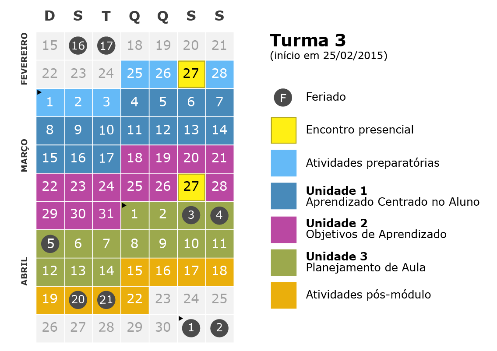

Módulo Aprendizado Centrado no Aluno – Turma 3
Buscando dar continuidade ao processo de desenvolvimento do corpo docente, o DEA (Desenvolvimento de Ensino e Aprendizagem), em parceria com as coordenações, está oferecendo um curso de formação e aperfeiçoamento em formato híbrido (parte presencial, parte a distância).
O módulo “Aprendizado Centrado no Aluno” tem duração de oito semanas e conta com dois encontros presenciais, cuja participação é obrigatória.
Ao término do módulo, os docentes estarão aptos a:
- Definir o conceito de Aprendizado Centrado no Aluno (ACA) com exemplos e contraexemplos.
- Identificar possíveis impactos do ACA no aluno e no professor.
- Avaliar o quanto uma aula está alinhada ao ACA.
- Elaborar objetivos de aprendizado centrados no aluno.
- Avaliar a viabilidade de mensuração dos objetivos de aprendizado.
- Elaborar o planejamento de uma aula alinhada ao ACA para atender a determinados objetivos de aprendizado.
O curso é fortemente pautado no trabalho colaborativo e na troca de experiência entre os docentes. Tudo isso, juntamente com as atividades de autoestudo, exigirá dedicação semanal de aproximadamente 4h.
Cronograma do módulo:

No momento as inscrições estão sendo feitas a partir da indicação direta das coordenações de cada programa. Caso tenha interesse em participar dessa turma, converse com seu coordenador.
 Calendário de eventos
Calendário de eventos